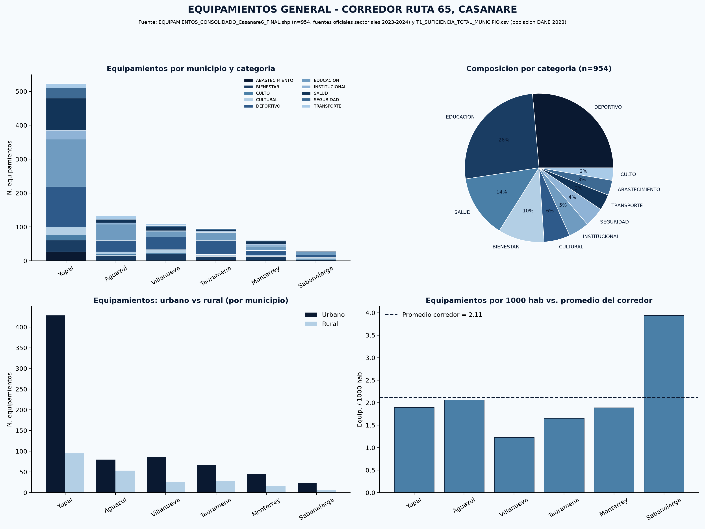
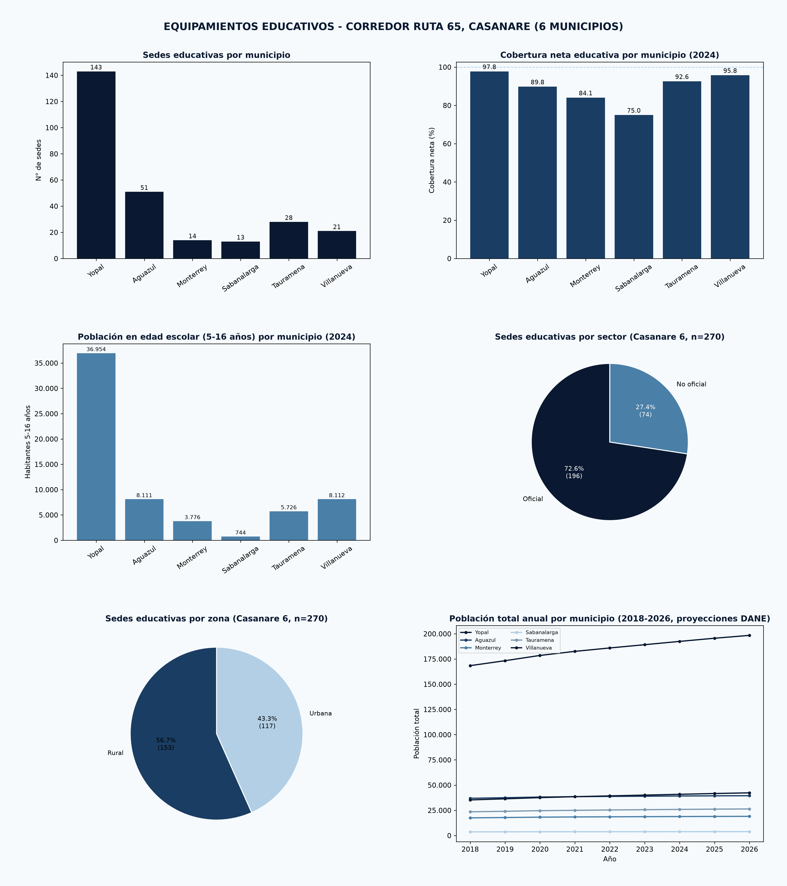
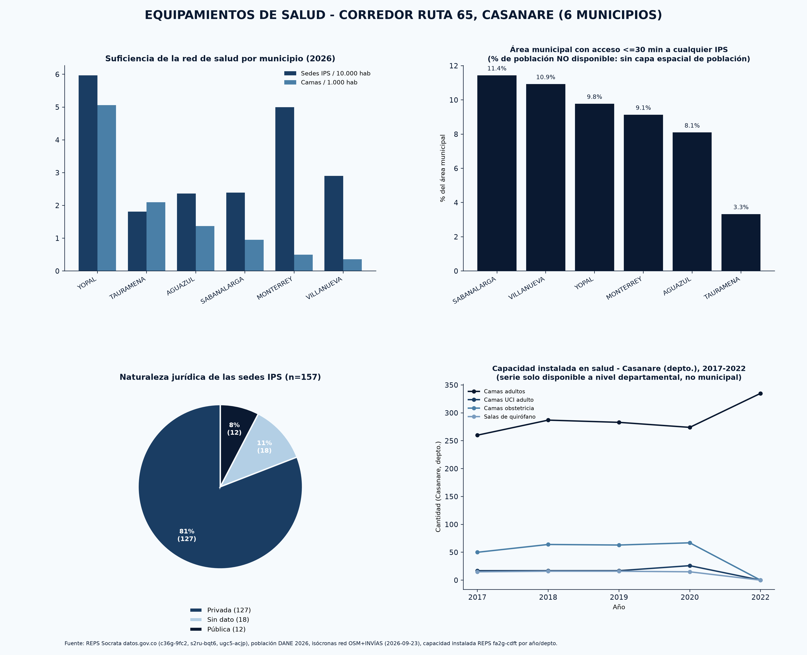
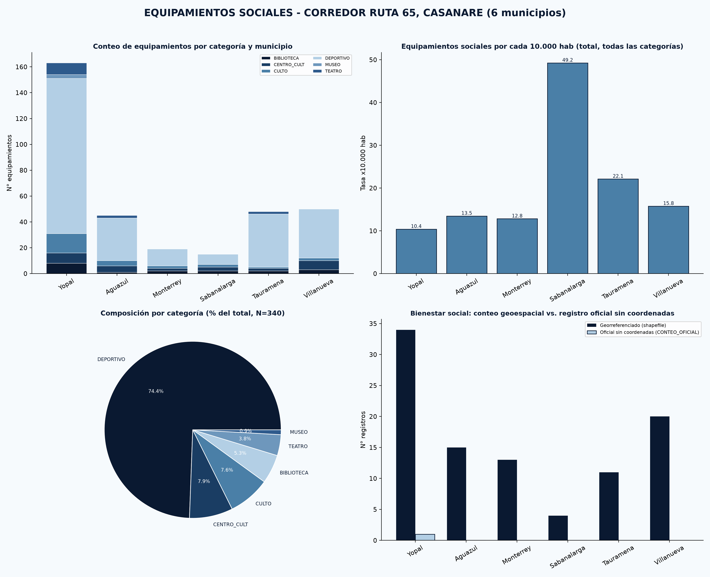
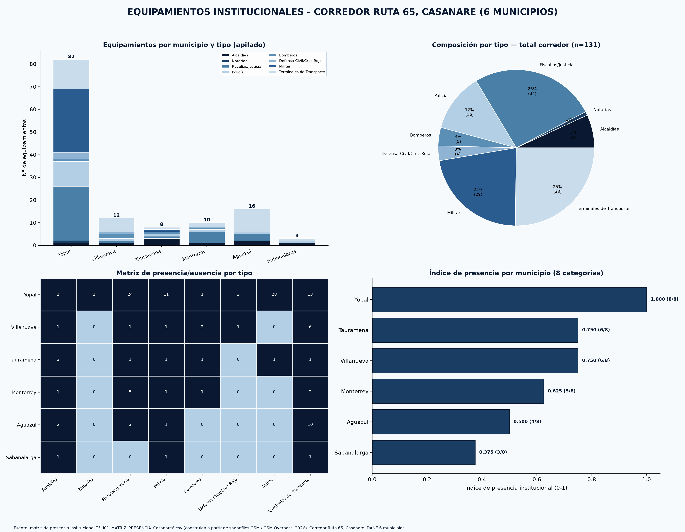
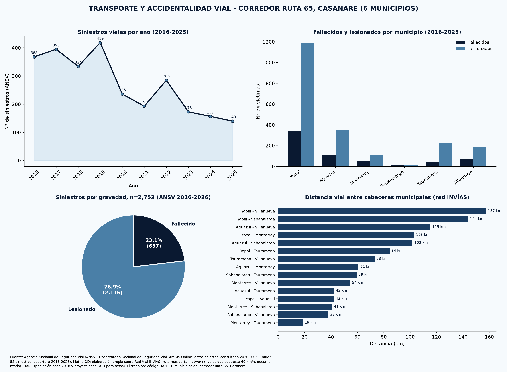
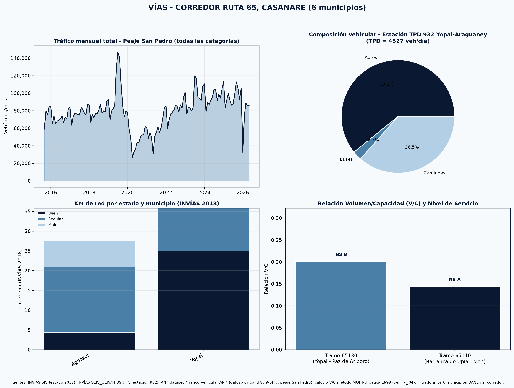
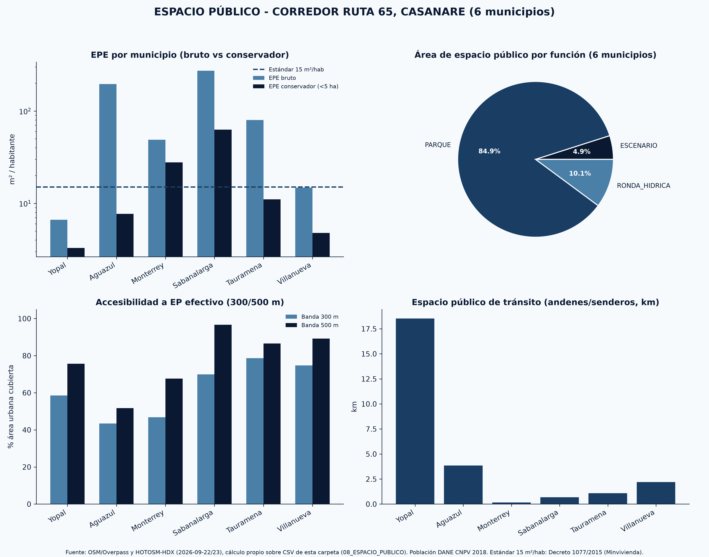

De país a corredor


Equipamientos General
Yopal concentra el 54.8 % de los equipamientos del corredor (523 de 954), mientras Sabanalarga reúne apenas 30 y un único punto de salud.


Equipamientos Educativos
Sabanalarga tiene la mayor dotación por niño en edad escolar pero la menor cobertura neta (75 %): allí el problema es de demanda o permanencia, no de infraestructura.


Equipamientos de Salud
La salud es el cuello de botella del corredor: en ningún municipio más del 11.5 % del área está a ≤30 min de una IPS, y Yopal concentra el 87 % de las camas.


Equipamientos Sociales
Yopal tiene la mayor cantidad absoluta pero la tasa per cápita más baja (10.39 por 10.000 hab.); los escenarios deportivos dominan con 253 en total.


Equipamientos Institucionales
Yopal es el único municipio con las 8 categorías institucionales; Aguazul, segunda población del corredor, no tiene bomberos, notaría, Defensa Civil ni presencia militar mapeada.


Transporte
La accidentalidad cayó 67 % entre el pico de 2019 (419 siniestros) y 2025 (140); ningún tramo de 1 km resulta un hot spot significativo: la siniestralidad está dispersa a lo largo de la vía.


Vías
La Ruta 65 no está congestionada (V/C de 0.14 a 0.20, niveles de servicio A–B) pero sí es una vía de carga: 36.5 % de camiones en la estación 932.


Espacio Público
Cuatro de seis municipios no alcanzan el mínimo de 15 m²/hab; Yopal, la ciudad principal, tiene el mayor déficit con 3.29 m²/hab, apenas el 21.9 % del estándar.

